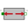

PartialCompliantCompliant connection of two translational 1D flanges |
|
Information
This information is part of the Modelica Standard Library maintained by the Modelica Association.
This is a 1D translational component with a compliant connection of two translational 1D flanges where inertial effects between the two flanges are not included. The absolute value of the force at the left and the right flange is the same. It is used to built up springs, dampers etc.
Connectors (2)
Extended by (4)
|
Modelica.Mechanics.Translational.Components
Linear 1D translational spring |
|
|
Modelica.Mechanics.Translational.Examples.Utilities
Linear 1D translational spring and damper in parallel (s and v are not used as states) |
|
|  |
Modelica.Mechanics.MultiBody.Examples.Loops.Utilities
Rough approximation of gas force in a combustion engine's cylinder |
|
Modelica.Mechanics.MultiBody.Examples.Loops.Utilities
Simple gas force computation for combustion engine |